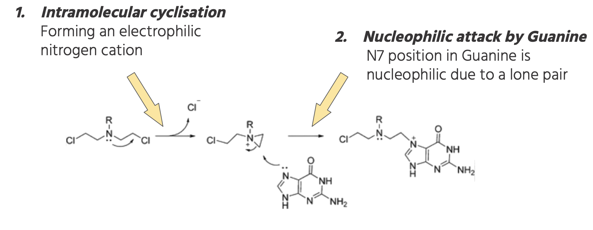

Understanding the alkylating process that makes these compounds potent chemotherapeutic agents

Nitrogen Mustard Activation PathwayCredit to Polavarapu, A., Stillabower, J. A., Stubblefield, S. G. W., Taylor, W. M., & Baik, M. H. (2012). The mechanism of guanine alkylation by nitrogen mustards: A computational study. Journal of Organic Chemistry, 77(14), 5914–5921.
The helicase binds tightly to one DNA strand, and as it translocates forward, it pulls that strand.
This causes the complementary strand to be physically pushed away as base pairing is disrupted.
The separation destabilizes the nucleotide base pairs, causing them to preferentially separate.
Credit to Kumar, V., Abbas, A. K., & Aster, J. C. (2015). Robbins and Cotran pathologic basis of disease (9th ed.). Elsevier.
Aziridinium ion will form a strong covalent bond between the two strands of DNA, or more commonly known as interstrand cross-linkage.
The linkage prevents the helicase from separating the two strands apart.
This halts the α-Polymerase from making a complete set of Okazaki fragments.
DNA Replication fails
MechlorethamineCredit to Pet Cancer Society. (n.d.). [Image of mechlorethamine chemical structure]. Pet Cancer Society.
Drugs that are under the Nitrogen Mustard class include Mechlorethamine
It targets lymphomas, breast carcinoma and solid tumors
Nitrogen Mustards: Biochemical Mechanism
Key Features of Nitrogen Mustards
Bifunctional alkylating agents with two reactive chloroethyl groups
Form highly reactive aziridinium intermediates via intramolecular cyclization
Primarily target the N7 position of guanine in DNA (most nucleophilic site)
Create interstrand cross-links (8-9Å spacing) that block DNA replication
Cross-links preferentially form at 5'-GNC-3' sequences (N = any base)
Nitrogen mustards are a class of bifunctional alkylating agents that exert their cytotoxic effects through covalent modification of DNA. The mechanism involves several distinct steps:
Activation Pathway
Intramolecular cyclization: The nitrogen mustard undergoes spontaneous intramolecular cyclization (SN2 reaction) to form an electrophilic aziridinium ion, with chloride as the leaving group.
Nucleophilic attack: The N7 position of guanine (pKa ~3.5), being highly nucleophilic due to its lone pair of electrons in the major groove, attacks the aziridinium ion (rate-limiting step).
Covalent bonding: Formation of a stable monoadduct via alkylation at N7 of guanine.
Second alkylation: The second chloroethyl arm undergoes similar activation, forming another aziridinium ion that reacts with a guanine on the opposite DNA strand.
Cross-link formation: Bifunctional adduct creates an interstrand cross-link (primarily between N7 positions of guanines).
The aziridinium ion is a highly strained three-membered ring structure (angle strain ~60°) that makes nitrogen mustards exceptionally reactive toward nucleophilic sites in DNA. The N7 position of guanine is particularly susceptible due to its location in the major groove and high electron density.
The bifunctional nature of nitrogen mustards allows them to form cross-links between two guanine residues, typically on opposite strands of the DNA double helix with an optimal spacing of 8-9Å. These interstrand cross-links prevent strand separation during DNA replication, effectively halting the replication process and triggering apoptotic pathways through the DNA damage response system.
Structural Determinants of Cross-Linking
The efficiency of cross-link formation depends on several factors:
Distance between reactive centers: The ~8-9Å spacing between chloroethyl groups matches the distance between N7 atoms of guanines in opposite strands.
Base sequence context: 5'-GNC-3' sequences are most susceptible due to optimal spatial alignment.
Steric accessibility: The N7 position of guanine is in the major groove, making it more accessible than other nucleophilic sites.
Electron density: The N7 lone pair has higher electron density than other potential targets (e.g., O6 of guanine).
Nitrogen Mustard Animation
5'-3' Backbone (Blue)
3'-5' Backbone (Red)
Adenine (A)
Thymine (T)
Guanine (G)
Cytosine (C)
Hydrogen Bonds
Nitrogen Mustard: Step 1
The animation will demonstrate the step-by-step mechanism of nitrogen mustard action on DNA. Click "Next" to begin.
Biological Consequences of Alkylation
The formation of interstrand cross-links by nitrogen mustards has profound biological consequences at the molecular, cellular, and tissue levels:
Molecular Effects
DNA distortion: Cross-links cause significant helical distortion (~30° bend) and local denaturation.
Replication blockage: The cross-links prevent DNA strand separation, halting the replication fork.
Transcription inhibition: RNA polymerase cannot traverse the damaged DNA region.
Base pairing disruption: Alkylated guanine can mispair with thymine during replication.
Cellular Response Pathway
Damage recognition: ATM/ATR kinases detect DNA damage and phosphorylate downstream targets.
Cell cycle arrest: p53 activation leads to G1/S or G2/M arrest via p21 induction.
Repair attempts: Nucleotide excision repair (NER) and homologous recombination (HR) pathways are activated.